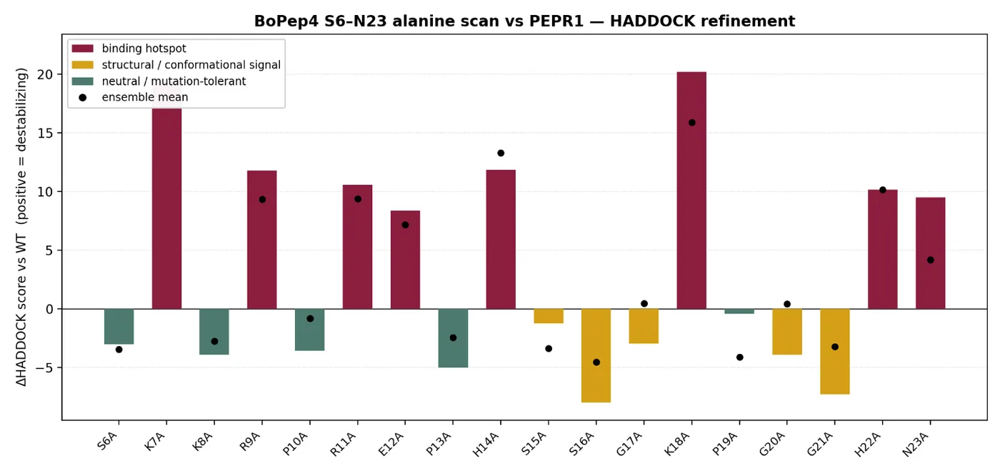
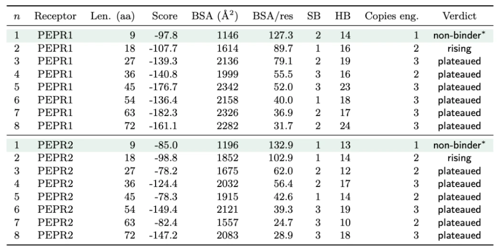
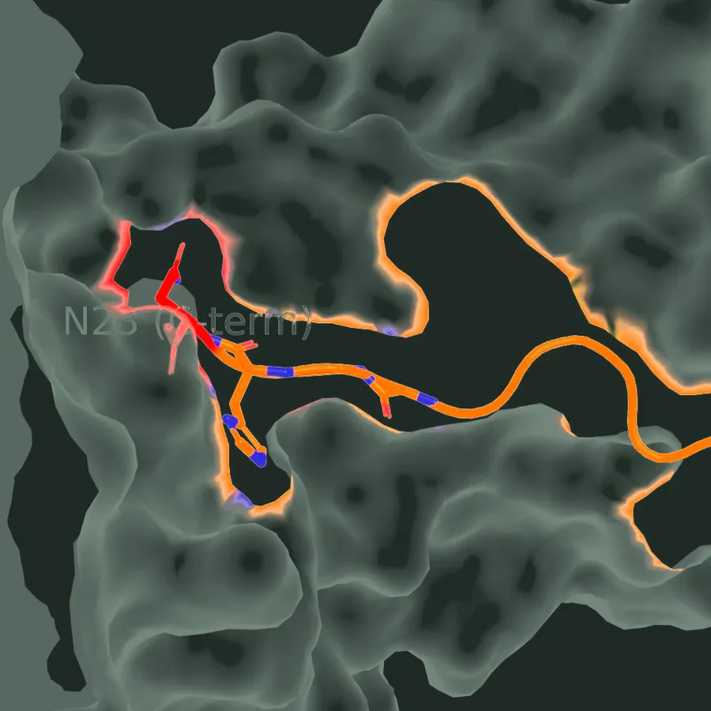
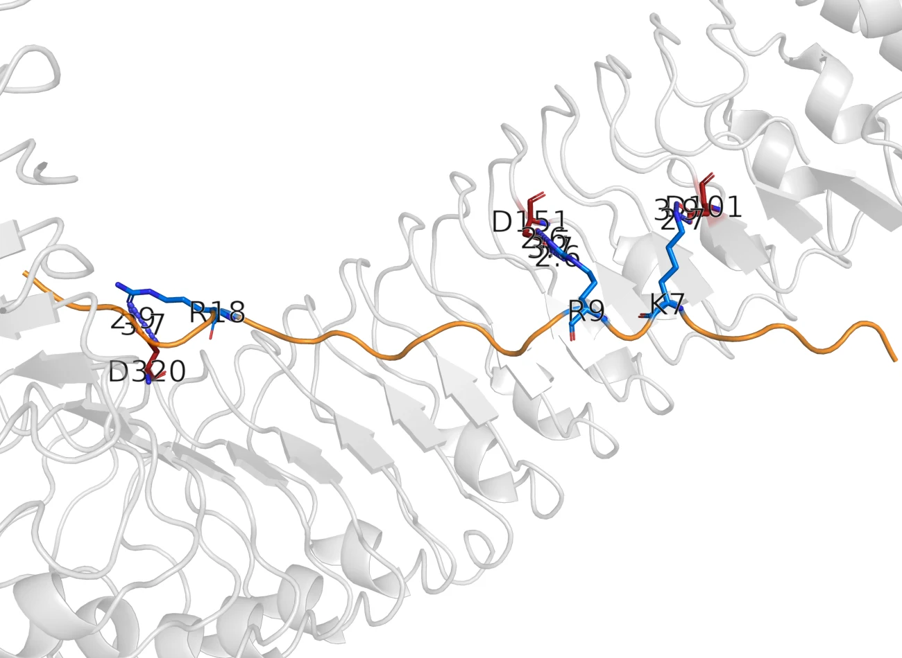
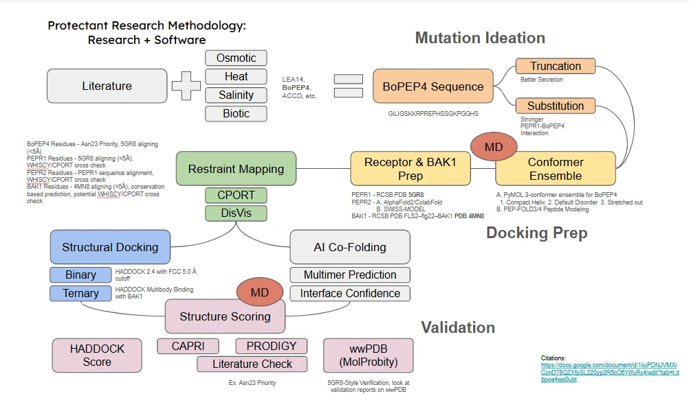

The runs
Three protectants, three engineering axes, one docking workflow applied to each. The roster below gives what has been run, what it returned in one line, and what is still outstanding. A run that has not happened is marked as such rather than left off the list.
Every run below is a HADDOCK 2.4 docking of one peptide or protein variant against one receptor, using the restraint sets described under restraint mapping. The BoPEP4 set is the one that produced decisions; the other two protectants are scoped and waiting.
BoPEP4
-
Seventeen N-terminal cuts against both receptors. A plateau across the first cuts, then a cliff. It decided the shortest construct that still binds.
-
Every residue from Ser6 to Asn23 replaced with alanine in turn, sorted into binding hotspots, structural signals and mutation-tolerant positions.
-
The conserved 15 to 23 unit repeated one to eight times, against both receptors, with buried surface area per residue tracked alongside the score.
-
K8Q and K18RRan
The two point substitutions the alignment identified: one aimed at the receptor anchor, one at protease resistance in the supernatant.
-
S15A and G17ARan
Two positions inside the conserved motif, run as damaged controls rather than as candidate designs. Pearce 2008 measured large activity losses for both, so a workflow that scores them as harmless is a workflow that is not reading the motif.
-
N-His against C-HisRan
Where to put the purification tag. The C-terminal placement is the one the molecular dynamics found a problem with, because Asn23 stops being a C-terminus once anything is fused after it. See the trajectory.
-
Δ1-2 and Δ1-3Ran
The shallowest cuts on the ladder, run separately to fix where the plateau starts.
-
Ternary dockingRan
PEPR1, BoPEP4 and BAK1 as a three-body run from the threaded binary model. Assessed for clashes and interface plausibility, not for affinity. Method.
-
Asn23 strategic importanceRan
The C-terminal anchor examined on its own, across the docked set and later in simulation. It is the contact everything else is measured against.
-
Other engineering direction runsNot run
Listed in the layout document without being specified. Scope them before the freeze or drop the line.
ACC deaminase
-
Y156CRan
A single substitution in the enzyme, carried forward from the structure review.
-
Remove unpaired cysteinesRan
Six unpaired cysteines removed, on the same reasoning as C58S in LEA14: an unpaired thiol is inert inside the cell and a liability once the protein is exported.
-
V293TRan
A second point substitution in the panel.
-
PLP binding testRan
The pyridoxal phosphate cofactor modelled both ways, chemically bonded to the enzyme and free in the site, because the two give different answers about the active site.
-
AlphaFold folding consistencyNot run
Repeat predictions to see whether the fold is returned consistently before any of the substitutions above are trusted.
-
Lid loop, residues 39 to 50Not run
The mobile lid over the active site. Not yet modelled.
-
Measure blocking amino acidsNot run
Which residues obstruct substrate entry. Not yet measured.
LEA14
Every LEA14 run is outstanding. The designs are specified on Methodology, and none of them has been docked or simulated.
-
N-His K + GGGGS + WTNot run
The K-segment graft on the full-length protein, joined by a flexible linker.
-
N-His K + GGGGS + T1-16Not run
The same graft on the truncated core.
-
N-His T1-16, T1-23, T146-151Not run
Three truncations: two at the disordered N-terminal extension, one at the C-terminal tail.
-
C58SNot run
The unpaired cysteine removed, so the protein cannot dimerise in the oxidising extracellular compartment.
-
Truncation ladder and alanine scanNot run
The two systematic sweeps that BoPEP4 has and LEA14 does not.
The truncation ladder
The question was how much of the peptide can be removed before binding is lost, because a shorter chain is cheaper to synthesise and quicker to export. The answer has two parts: a plateau, where cuts cost nothing, and a cliff, where they cost everything.

The team’s reading of the ladder, in their own words, is under Engineering axes on Methodology: the first six residues can be removed for a cost of about twenty units, the neighbouring cuts behave the same way, and the cliff appears only at deeper truncations.
The alanine scan
Truncation asks which end can go. The alanine scan asks which individual residues are doing the work, by replacing each one in turn with a residue that has almost no side chain and seeing what the score does.

Two things follow from the scan. It is the evidence that K18 carries the contact, which is what made K18R a substitution worth testing rather than an arbitrary one. It also separates positions that vary because they do not matter from positions where two peptides solve the same problem differently, which is the distinction sequence alignment on its own cannot make.
Tandem repeats of the conserved core
The team’s reasoning for running this sweep, and what they concluded from it, is under Engineering axes on Methodology.

Point substitutions: K18R and K8Q
Both substitutions are argued in the team’s own words under Engineering axes on Methodology: K18R restores the arginine AtPEP1 carries at that position, where the alanine scan says the position carries the contact, and K8Q removes a positive charge to make the peptide harder for a protease to cut.
Reading a docking score
Every number on this page is a HADDOCK score or something derived from one, so the page has to say what a HADDOCK score is worth. The team's own statement is short.
No claim on this page rests on a score alone. The score is read for convergence and for ranking inside a single run, and every model that mattered was also checked against the reference geometry from the crystal structures, against the interface size PISA reports, against the stereochemistry MolProbity reports, and against the contacts the literature already documents. The full set of checks, and the case where a cluster ranked fourth by score reproduced none of the native contacts, is on Methodology.
Each run in the roster above still needs the same three lines: what was run, what came back as a number, and what decision it changed. The numbers are in the dry lab reports and have not been written up here yet.
Where these results go
Results from here feed three places, and the section is complete only when all three agree.

Into simulationThe survivors of the ladder were run as trajectories, which is where a pose that scores well and does not hold up shows itself.

Into the worked casePeptide Design carries BoPEP4 residue by residue, with the per-position interface data and the constructs as they were ordered.

Into the wet labThe truncation plateau is a manufacturability claim, and it is being tested as a secretion assay against the wild type.